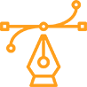
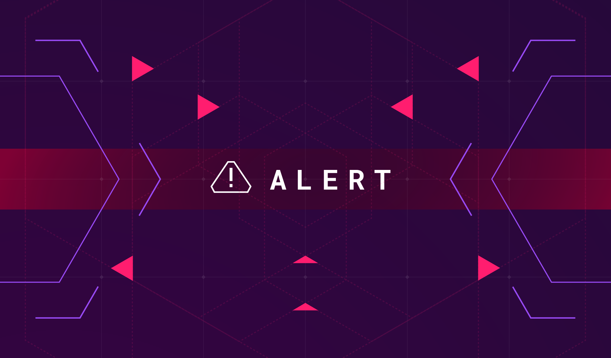
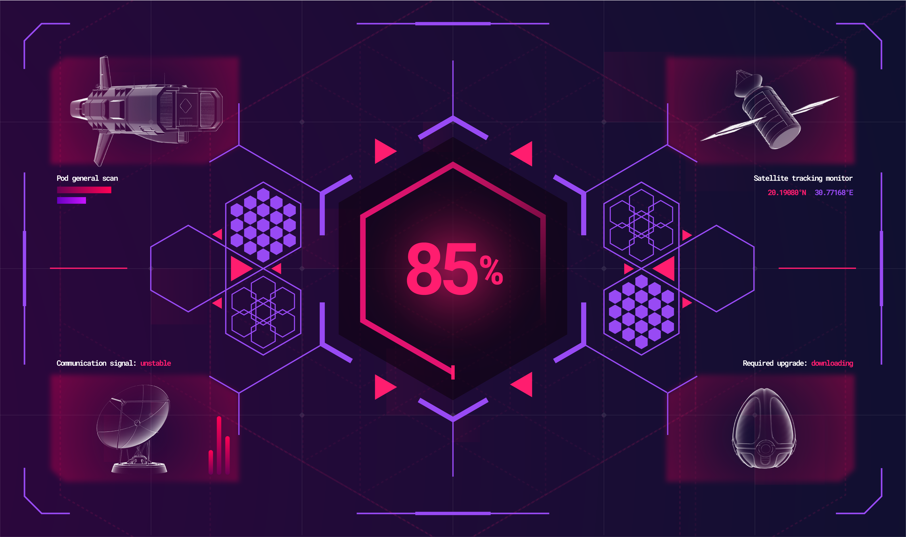
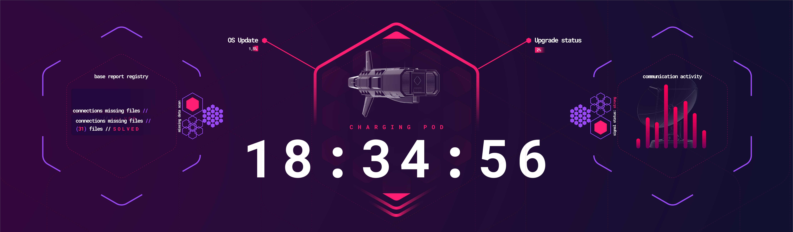

The Signal
Interface design & animation
Fictional interfaces designed and animated for the film — monitoring systems, loading sequences and an ultrawide display that evolves with its environment.

UI Design
Interface Art Direction
Motion Design
UI Animation
Interfaces designed to work as part of the story.
For this project, I was invited to design and animate a series of fictional interfaces created specifically for two RTFKT videos: The Warning and The Signal.
My role was to develop the visual language, interface layouts, monitoring systems, radar displays and animated UI elements that would appear on screens throughout both films.
Unlike a traditional product interface, these designs needed to work as part of the story. Every screen had to feel functional and believable within its environment while also contributing to the visual identity and atmosphere of the films.
The project combined UI design, motion design and interface animation, creating digital systems designed specifically for cinematic storytelling.
The Signal
full filmthe signal — full film
watch the full film on rtfkt's youtube ↗A familiar system, and an alert.
main monitor — alert sequence
In this film, the interface begins as part of a monitor used by one of the characters, presenting a functional digital system that creates the impression of a familiar technological environment.
My work involved designing and animating the interface displayed on this monitor, including the visual behavior of the system and its loading sequence.
However, the interface was also an important part of a much larger transformation happening within the story.
secondary screen — alert loop

alert — final layout
Charging, scanning, preparing for exodus.
exodus sequence — scanning
prepare for exodus — progress

first screen — pod scan & download status
The technology evolves with the world around it.
At a key moment in the film, the character interacts directly with the touchscreen. After this interaction, the entire environment begins to transform — including the monitor itself. The original display evolves into a large curved ultrawide screen, creating an opportunity to completely change the visual language of the interface.
curved ultrawide interface — animated

ultrawide layout — charging pod
The larger curved screen allowed for a different composition and information hierarchy, creating a system designed specifically for the new environment.
The goal was to make the transition feel natural: the technology itself evolves alongside the world around it.
From the first loading screens to the final ultrawide interface, the animation helped connect each stage of the transformation and reinforce the relationship between the digital system and the physical space.
Interfaces that could exist naturally inside their own worlds.
On The Signal, the work involved designing the visual systems from scratch and bringing them to life through animation — from monitoring displays and radar systems to transmission data and interactive screens. More than creating screens to be displayed inside the videos, the goal was to make each interface feel like a functional part of the technology and storytelling.